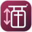
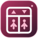
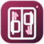
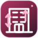

Двери лифта
Минимальный международный символ со стрелками.
Пять разных способов показать лифтовое оборудование: от универсального знака до архитектурной схемы.
Минимальный международный символ со стрелками.

2Лифтовый механизм, тросы и движение по шахте.

3Кабина, пассажиры и направления движения.

4Две кабины движутся на разных уровнях.

5Максимально архитектурный знак здания и шахты.